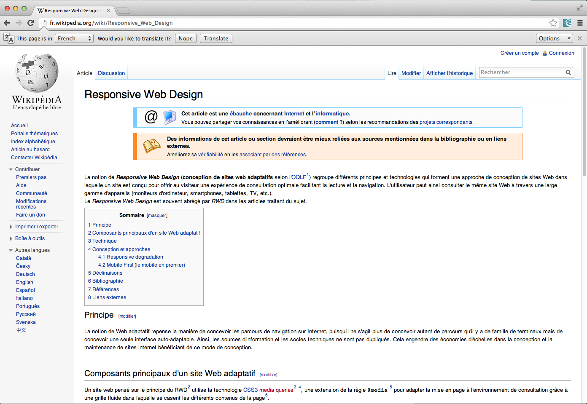
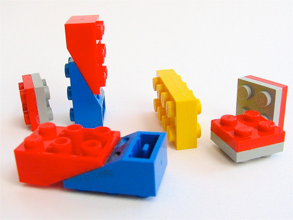

Introduction
Mobile Web App
What is a mobile web app?

Size matters...


Surviving offline

Exploring

Geolocation

How to...
Responsive Web Design
What is it?
No more zooming, scrolling!
Which techniques?
. media queries
. fluid grid
. fexible images
No more zooming, scrolling!
Which techniques?
. media queries
. fluid grid
. fexible images

Progressive enhancement

Which tools?


Going native
as hybrid
Cordova

PhoneGap Build


Full-Stack Framework
. Presentation
. Business logic
. Persistence
. Build & Test
. Documentation

An evolution

Leverages existing resources
(works with "JVM friendly" hardware, software and humans)
Build upon industry-proven technologies
(established, well tested and scalable Java frameworks & libraries)
Convention over Configuration
. No more painful XML settings
. 80 / 20 rule
. Don't repeat yourself (DRY)

Domain Driven Design
. Focus on the domain, rather than technology
. Rapid prototyping
. Adaptable architecture

Magic Scaffolding

Grails Plugin System
. 1000+ plugins
. Modularized app architecture
. Reuse established Java libraries
. Reuse established Java libraries



Groovy
. Less and more expressive code . Mix Java & Groovy
. Compiles to Java bytecode, run on JVM
. Dynamic language for changing requirements

Conclusion
Same your project in github (optional)
git init
git add -A
git commit -m "my changes"
git remote add origin https://github.com/yourGithubUsername/KissingTurtlesGreach.git
git push -u origin master
git init
git add -A
git commit -m "my changes"
git remote add origin https://github.com/yourGithubUsername/KissingTurtlesGreach.git
git push -u origin master